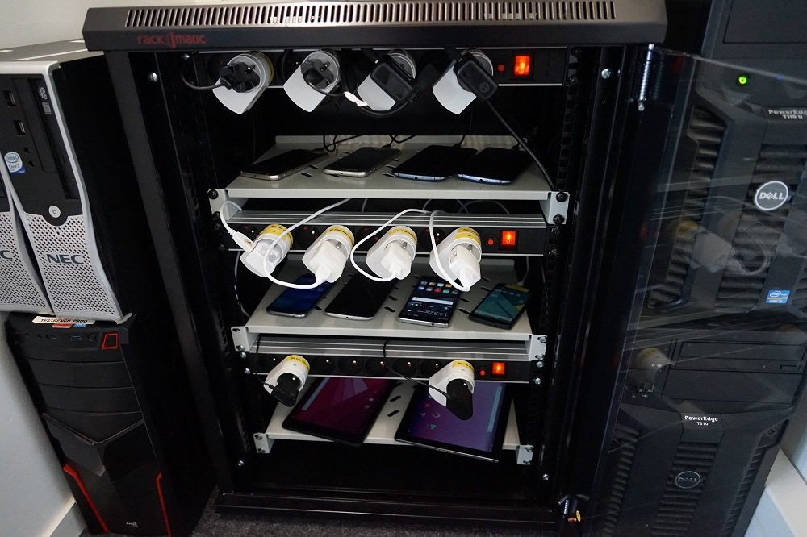
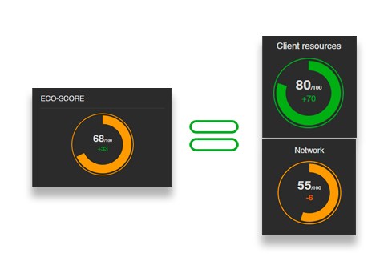

Dans cet article, nous allons voir plus en détail comment est calculé l’écoscore dans le cas d’un benchmark web réalisé par Greenspector.
Et dans les autres cas ?
Comme vous le savez peut-être déjà, Greenspector réalise également des mesures sur applications mobiles. Dans le cas des applications Android, il est possible de réaliser facilement un benchmark. On reste sur une méthodologie standard : mesures sur les étapes de chargement, pauses et référence. L’écoscore est là aussi calculé à partir des écoscores Réseau et Ressources Client. La seule différence notable est que la mise en œuvre des bonnes pratiques n’est pas contrôlée automatiquement et n’entre donc pas dans le calcul.
Aussi, dans certains cas, il est plus judicieux de mesurer directement un parcours utilisateur afin d’être au plus près du comportement du site dans ses conditions réelles d’utilisation. Que ce soit dans le cas du web ou d’une application mobile, Greenspector réalise les mesures (toujours sur terminaux utilisateurs réels) après automatisation du parcours (via le langage GDSL). L’écoscore est ensuite établi à partir des métriques représentées via 3 écoscores : Données mobiles, Performance et Energie.
Qu’est-ce qu’un benchmark web ?
Afin d’évaluer les impacts environnementaux des sites web, Greenspector dispose de plusieurs modes opératoires et outils. Le plus simple à mettre en place est le benchmark web. Cette méthodologie standard permet de mesurer n’importe quelle page web et de la comparer avec d’autres pages.

Les mesures sont effectuées sur un smartphone réel disponible sur notre banc de test, le plus souvent en WIFI (même si d’autres modes de connexion, type 3G ou 4G par exemple, sont possibles) et avec le navigateur Chrome.
Une telle mesure dure 70 secondes et inclut :
- Le chargement de la page
- Une étape de pause avec la page affichée au premier plan
- Une étape de pause avec la page affichée à l’arrière-plan
- Le scrolling sur la page
A ceci s’ajoute une mesure de référence sur un onglet vide de Chrome.
Plusieurs itérations de mesure sont réalisées afin de s’assurer de leur stabilité.
On récupère ainsi des métriques sur les données transférées mais aussi l’impact sur le terminal de l’utilisateur et en particulier sur la décharge de la batterie. En plus de cela, la bonne mise en œuvre d’une trentaine de bonnes pratiques est vérifiée automatiquement.
Ensuite, les indicateurs environnementaux sont calculés en tenant compte quand c’est possible des statistiques réelles d’utilisation de la page. Vous trouverez davantage d’informations à ce sujet dans la page dédiée sur le blog Greenspector.
Une fois toutes ces informations disponibles, il devient facile de comparer différentes pages web, qu’elles soient ou non sur le même site. C’est ce mode opératoire qui est utilisé notamment dans le cadre des classements de sites proposés sur ce blog mais aussi à la demande d’un client afin d’établir un état des lieux sur un ou plusieurs de ses sites web et de proposer un plan d’action. Ce peut aussi être un moyen de construire un benchmark concurrentiel permettant de se positionner par rapport à un échantillon de sites similaires.
Vous pouvez d’ores et déjà avoir un aperçu de tout ceci via le Mobile Efficiency Index (MEI) mis à disposition par Greenspector afin d’évaluer gratuitement l’impact d’une page web.
Il ne nous reste pour l’heure qu’à voir comment est calculé l’écoscore dans le cadre d’un benchmark web.
Calcul de l’écoscore pour un benchmark web
Tout d’abord, l’écoscore établi pour une page web est la moyenne de deux valeurs :
- Un écoscore Ressources Client qui reflète la façon dont les ressources client sont gérées du point de vue de la sobriété lors de l’accès à cette page
- Un écoscore Réseau qui reflète la sollicitation du réseau (et des serveurs)

Ecoscore Ressources Client
L’écoscore Client repose sur 12 contrôles effectués sur les métriques directement récupérées sur le terminal utilisateur (et collectées via son système d’exploitation). Celles-ci concernent entre autres les données transférées mais aussi la décharge de la batterie, le CPU et la mémoire. Pour chacune, 4 à 5 seuils sont définis afin de déterminer les valeurs acceptables. En fonction de ces seuils, une note est calculée. Les notes pour l’ensemble des métriques sont ensuite agrégées afin de calculer l’Ecoscore Client.
Par exemple :
- La note maximale concernant les données transférées lors du chargement de la page ne pourra être obtenue que si leur poids total est inférieur à 500 ko
- Pour la décharge de la batterie, on compare à celle mesurée lors de l’étape de référence décrite précédemment
Les seuils utilisés sont définis via une base de mesures afin de pouvoir, en fonction de la répartition statistique des mesures précédemment obtenues, déterminer les seuils attendus.
Ecoscore Réseau
Aujourd’hui, la méthodologie Greenspector repose sur des mesures uniquement réalisées sur des terminaux utilisateurs réels. En conséquence, la définition de l’écoscore Réseau est légèrement différente. Elle repose sur deux éléments :
- La comparaison des métriques liées au transfert de données avec des seuils définis de façon similaire à ceux utilisés pour le calcul de l’écoscore Client
- La vérification automatique de la mise en œuvre d’une trentaine de bonnes pratiques
Ainsi, par exemple, on s’assure que les ressources textuelles sont bien compressées côté serveur, que les images ne sont pas retaillées dans le navigateur et qu’il n’y a pas plus de 25 requêtes HTTP en tout. Il s’agit donc ici de bonnes pratiques techniques (plutôt orientées efficience) que l’on retrouve dans la plupart des référentiels de bonnes pratiques d’écoconception ou de conception responsable de services numériques.
Conclusion
Tous ces éléments font du benchmark web un procédé très efficace pour évaluer les impacts d’une page web et la comparer avec d’autres pages web. Il s’agit aussi d’un excellent moyen d’amorcer une analyse plus poussée, notamment en regardant en priorité les pages les plus impactantes d’un site. Dans certains cas, il sera d’ailleurs plus judicieux de commencer par les pages les moins impactantes. Un défaut de conception sur une page plus impactante lui sera souvent propre alors que, sur une page moins impactante, il sera souvent commun à l’ensemble des pages.
Le benchmark web, entre autres via le calcul de l’écoscore, illustre une fois de plus la nécessité d’utiliser à la fois des mesures et des bonnes pratiques dans une démarche de réduction des impacts environnementaux d’un service numérique.